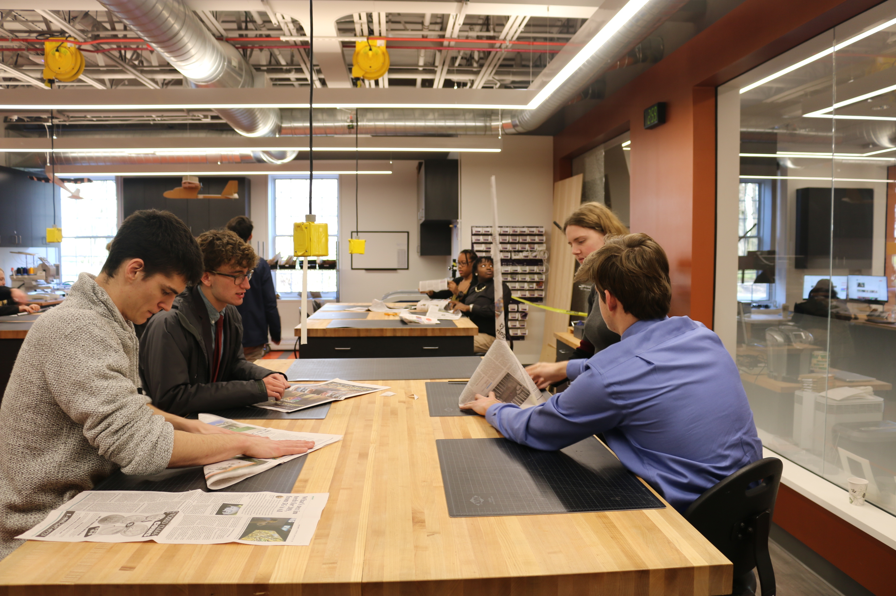
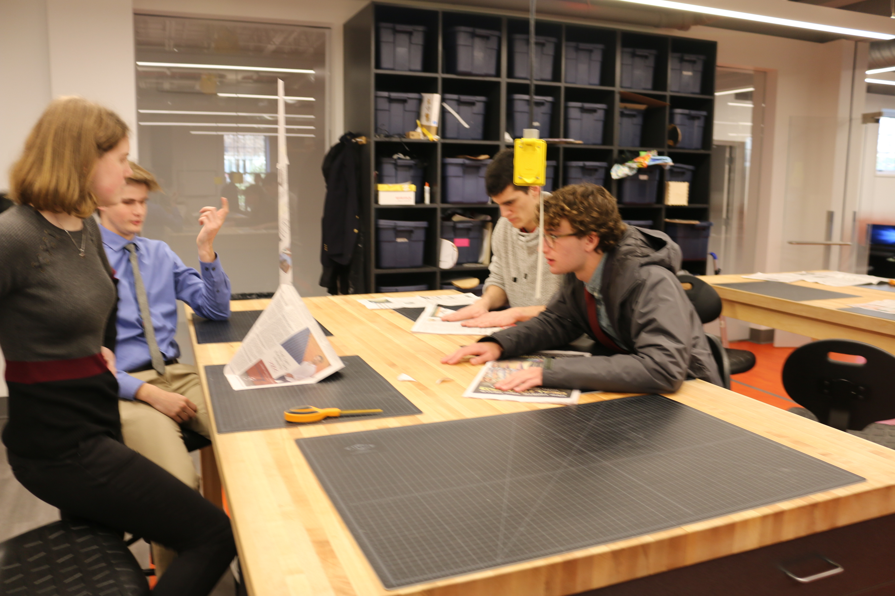
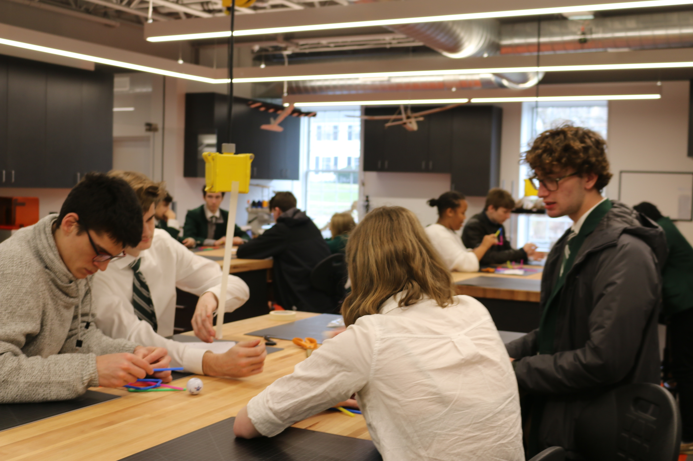
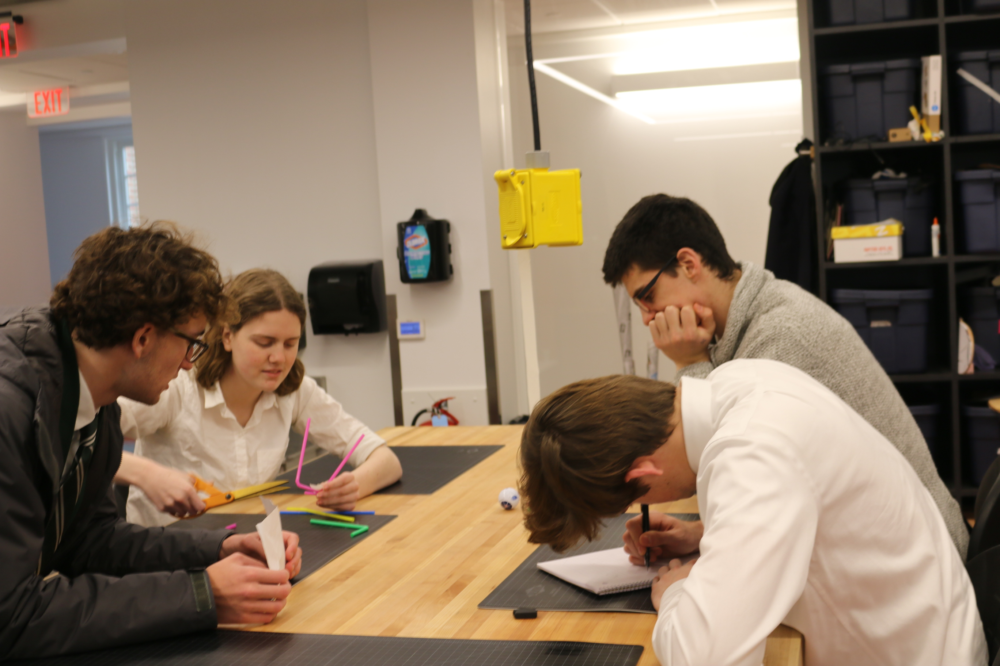

Throughout the first rotation we've had two group design challenges.
The first challenge was making a tower using only a couple of pieces of newspaper and a piece of tape. The groups had to make the highest tower that would be resistant to fan blowing from 6 feet away. My group tried to make a tower based on a model of Eiffel Tower. We made a cone base with the hole on the top that held the rolled newspaper. A cone wasn't stable at first so I recommended to put a folded paper under the cone and tape it. Our tower was about 45 inches tall, which was a success for my group.
 The second challenge was using 12 straws and a piece of tape to make something that would catch a golf ball that was dropped from the height of 3 feet. We tried making a basket the would hold it, but didn't succeed. We changed the idea and made a straw raft. Or creation in this challenge didn't work, but we had a surprise confetti made from remaining parts of the straw.
 